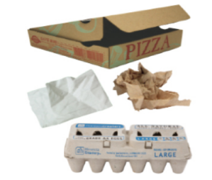
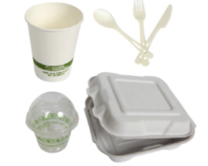

Step 4 Use¶
Goal¶
To minimize or eliminate hazards in products and pollution and increase the use of life-friendly chemistry during the use stage of the product’s life cycle. To restore and preserve natural capital by preventing the generation of waste.
Strategies¶
Use low hazard chemicals in materials and products
Use especially low hazard chemicals in applications where high exposure is likely to occur
Make products that are intended to last
Make products from materials that are readily recovered and recycled after use
Make sure that the user knows what to do with the product after use
Building a chemical inventory is an important step for knowing all of the chemicals in your product. This is the first step to understanding if the chemicals used support life-friendly chemistry, or if they are hazardous. See Resource 1 - Chemical Inventory for guidance and suggestions. The chemical inventory will help you answer guiding questions in multiple PrISM steps as well. While identifying all of the chemicals involved can feel like a daunting task, even small amounts of hazardous chemical ingredient additives or residuals from processing aids can impact the sustainability of the product. The more you know about what is in the material and what was used to create the material, the better you can identify areas for improvement. Gather as much information as possible now, and identify your data gaps where you are unsure of the chemicals used. Researching and filling in those data gaps is potentially an important action item, as is substituting out known hazardous chemicals.
Once you have built your chemical inventory, you can determine which chemicals are hazardous and may need to be substituted out. See Resource 2 - Chemical Hazard Assessment for guidance and suggestions on learning about the hazards of the chemicals in your inventory.
Examples¶
3D printing¶
3D printing or additive manufacturing is a technology that continues to advance rapidly. It is used in schools, a diversity of industries, and homes. One aspect of 3D printing that is unique at this time is that it moves elements of manufacturing from the factory to the home or shop. Decentralizing manufacturing makes it harder to oversee the use and generation of hazardous chemicals and makes the use of materials that are safe and benign even more imperative. When filament made from the plastic ABS is heated, melted and extruded in a 3D printer, it can create volatile compounds and nanoparticles that are harmful to human health. Corn based PLA filament is much safer than ABS when used as filament in additive manufacturing, but PLA can also produce harmful emissions if heated at a high enough temperature.

Image of 3D printers and printing materials¶
Image source: NASA
Food take-out containers¶
Some fiber-based food take-out containers contain highly fluorinated organic chemical additives to prevent wet or oily food from leaking through the container. However, it’s nearly impossible to tell just by looking at a product, like the ones pictured below, whether or not they contain such chemicals. In the case of food packaging materials, toxic, extremely persistent, environmentally-harmful chemicals are of particular concern because they come in contact with our food. This is why it’s so critical to design products from the outset to be functional during use without the need for hazardous additives.
Different kinds of food packaging, including a pizza box, an egg carton, hot and cold take-away cups, plasticware, and a food take-out clamshell.
 
Image Source: City of Plymouth Minnesota
Which of these compostable items probably contains fluorinated additives? A chemical inventory must be completed in order to know. See Resource 1 - Chemistry Inventory for guidance and suggestions.
With regards to single-use food contact materials, the Center for Environmental Health tested plates, bowls, clamshells, and multi-compartment food trays for total fluorine content, which would indicate the use of highly fluorinated addititives, and the resulting report is available on-line.